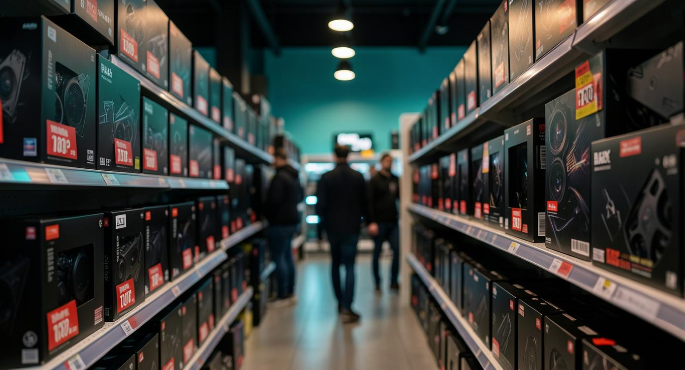
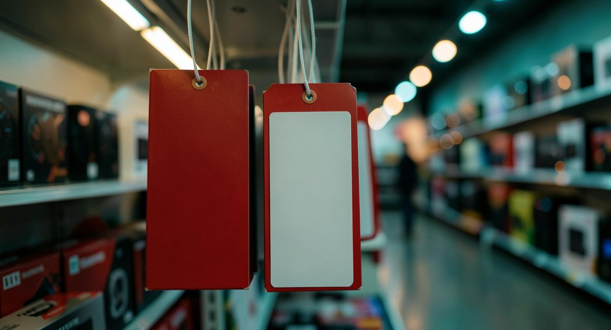
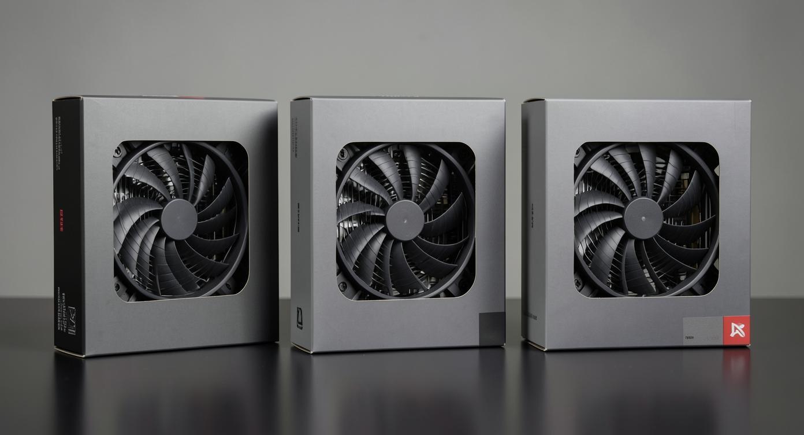
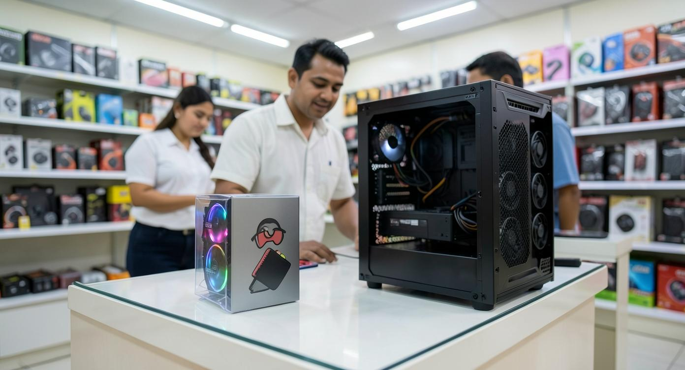

Black Friday 2026 GPU Deals: NVIDIA, AMD aur Intel Me Kaunsa Card Lena Chahiye?

Black Friday 2026 आ चुका है और ग्राफिक्स कार्ड खरीदने का मन बना रहे लोगों के लिए यह हफ्ता सबसे उलझन भरा होता है। हर दुकान "साल की सबसे बड़ी छूट" का स्टिकर लगा देती है, ईमेल में डील्स की बाढ़ आ जाती है, और असली सवाल पीछे छूट जाता है — क्या यह कार्ड मेरे काम का है और क्या इसकी कीमत सच में कम है?
इस आर्टिकल में मैं NVIDIA, AMD और Intel तीनों की डील्स को एक ही तराजू पर तोलूँगा। साथ में बताऊँगा कि भारत में Black Friday का असर कितना पड़ता है, कौन से "डील" असल में धोखा हैं, और अपने बजट के हिसाब से आपको कौन सा कार्ड देखना चाहिए। अगर आप पहली बार GPU खरीद रहे हैं, तो यह पूरा पढ़ लीजिए — कुछ हज़ार रुपये बचाने के चक्कर में कई लोग गलत कार्ड ले लेते हैं।
छोटा जवाब: Black Friday पर तीनों ब्रांडों की डील्स आती हैं, लेकिन फैसला छूट के प्रतिशत से नहीं, फाइनल कीमत से करें। NVIDIA में DLSS, रे ट्रेसिंग और CUDA ताकतवर है; AMD में समान कीमत पर ज़्यादा VRAM और रास्टर परफॉर्मेंस मिलती है; Intel Arc बजट बिल्ड के लिए अच्छा विकल्प है। भारत में Black Friday का असर सीमित रहता है, इसलिए ऑनलाइन और लोकल दुकान दोनों के दाम तुलना करें और बिल ज़रूर लें।
Black Friday 2026 में GPU डील्स कैसी हैं?
Tom's Hardware ने 22 नवंबर 2026 को अपनी ग्राफिक्स कार्ड डील्स गाइड अपडेट की। उसमें तीन बड़े परिवारों को ट्रैक किया गया — NVIDIA GeForce RTX 50 सीरीज़, AMD Radeon RX 9000 सीरीज़ और Intel Arc। रिपोर्ट का साफ संदेश यह है कि डील्स मौजूद हैं, लेकिन इस साल मेमोरी की महंगाई ने बहुत सी "भारी छूट" को नाममात्र बना दिया है।
यानी पहले जहाँ 20-25% छूट आम थी, वहाँ अब 8-12% छूट भी "अच्छी डील" कही जा रही है। ऐसे में सबसे ज़रूरी काम है — कीमत की तुलना पिछले तीन महीनों से करना, न कि सिर्फ "MRP बनाम सेल प्राइस" देखना।

तीन ब्रांड, तीन अलग ताकत
कार्ड खरीदना सिर्फ फ्रेम रेट का खेल नहीं है। आप जो सॉफ्टवेयर चलाते हैं, जिस रिज़ॉल्यूशन पर खेलते हैं और जो सुविधाएँ चाहते हैं — उन सबका फर्क पड़ता है। नीचे सरल तुलना है।
| ब्रांड | ताकत | किसे चुनें |
|---|---|---|
| NVIDIA GeForce RTX 50 | DLSS, रे ट्रेसिंग, CUDA, AI वर्कलोड | क्रिएटर, AI यूज़र, RT गेमर |
| AMD Radeon RX 9000 | रास्टर परफॉर्मेंस, ज़्यादा VRAM, FSR 4 | 1440p गेमर, वैल्यू चाहने वाले |
| Intel Arc | कम कीमत, अच्छा एनकोडिंग, AV1 सपोर्ट | बजट बिल्ड, मीडिया PC |
अगर आपका काम वीडियो एडिटिंग, 3D या AI है, तो NVIDIA का सॉफ्टवेयर सपोर्ट सबसे चौड़ा है। अगर आप सिर्फ गेम खेलते हैं और हर रुपये का हिसाब रखते हैं, तो AMD अक्सर बेहतर वैल्यू देता है। और अगर बजट बहुत कम है, तो Intel Arc को नज़रअंदाज़ न करें — कई गेम में यह अपेक्षा से बेहतर चलता है।
भारत में Black Friday का असर कितना?
सच यह है कि Black Friday मूल रूप से अमेरिकी सेल है। भारत में इसका असर बढ़ रहा है, पर यहाँ बड़ी डील्स अक्सर दिवाली, रिपब्लिक डे और बड़े ई-कॉमर्स सेल में आती हैं। Black Friday के नाम पर कई भारतीय स्टोर पुराना स्टॉक "सेल" का लेबल लगाकर बेचते हैं।
इसलिए भारत में खरीदते समय तीन चीज़ें ज़रूर देखें — क्या कीमत पिछले महीने से सच में कम है, क्या कार्ड का बिल और वारंटी भारत में मान्य है, और क्या सेलर भरोसेमंद है। इम्पोर्टेड कार्ड सस्ता दिख सकता है, पर वारंटी क्लेम में महीनों लग सकते हैं।

बजट के हिसाब से क्या देखें?
₹15,000 तक
इस बजट में नया हाई-एंड कार्ड नहीं मिलेगा। Intel Arc का एंट्री मॉडल या इस्तेमाल किया हुआ GTX 1650/1660 देख सकते हैं। 1080p में हल्के-मध्यम गेम के लिए यह ठीक है। भारी गेम के लिए इस बजट में Expectations कम रखें।
₹25,000 से ₹40,000
यह सबसे आम बजट है। यहाँ Intel Arc का ऊपरी मॉडल, AMD का RX 7600/9060 क्लास या NVIDIA का RTX 5050/5060 देखा जा सकता है। 1080p हाई और 1440p मीडियम के लिए यह रेंज ठीक है। सेल में अगर 16GB VRAM वाला कार्ड इस रेंज में मिले, तो उसे प्राथमिकता दें।
₹50,000 से ₹80,000
यहाँ RX 9060 XT 16GB और RTX 5060 Ti जैसे कार्ड आते हैं। 1440p हाई गेमिंग के लिए यह सही रेंज है। इस बजट में VRAM को लेकर समझौता न करें — 8GB वाला कार्ड आज ठीक चलेगा, पर दो साल बाद सीमा दिखने लगेगी।
₹90,000 से ऊपर
RX 9070 XT, RTX 5070 Ti या RTX 5080 जैसे कार्ड। 4K गेमिंग और भारी क्रिएटिव काम के लिए। इस रेंज में खरीदने से पहले PSU, केस कूलिंग और मॉनिटर तीनों की जाँच करें — वरना महंगा कार्ड भी अधूरा फायदा देगा।

डील के नाम पर ये 5 धोखे होते हैं
- फूला हुआ MRP: पहले MRP बढ़ाया जाता है, फिर उस पर 40% छूट दिखाई जाती है। असली बाजार कीमत से तुलना करें।
- पुरानी पीढ़ी का कार्ड: नए नाम के साथ पुराना चिप बेचा जाता है। मॉडल नंबर और रिलीज़ ईयर चेक करें।
- "Limited time" का दबाव: टाइमर सिर्फ दबाव बनाने के लिए होता है। 24 घंटे रुककर सोचने से कोई डील नहीं जाती।
- बंडल में घटिया सामान: सस्ता PSU या केस फ्री देकर कार्ड का दाम बढ़ाया जाता है। अलग-अलग खरीदकर तुलना करें।
- रेफर्बिश्ड को नया बताना: बिल और बॉक्स की सील चेक करें। सेलर की रेटिंग देखें।
खरीदने से पहले 6 स्टेप
- प्राइस हिस्ट्री देखें: ब्राउज़र एक्सटेंशन या प्राइस ट्रैकर से पिछले 90 दिनों का दाम देखें।
- तीन सेलर तुलना करें: ऑनलाइन स्टोर, लोकल दुकान और एक दूसरा शहर।
- VRAM और रिज़ॉल्यूशन मिलाएँ: 1080p के लिए 8GB, 1440p के लिए 12-16GB।
- PSU चेक करें: कार्ड की टोटल बोर्ड पावर और कनेक्टर देखें।
- वारंटी पढ़ें: भारत में सर्विस सेंटर है या नहीं, यह पहले पता करें।
- बिल और बॉक्स: खुलते ही सीरियल नंबर मिलाएँ और बिल संभालकर रखें।
अगर बजट कम है तो क्या करें?
ज़रूरी नहीं कि Black Friday पर ही कुछ खरीदें। अगर बजट कम है, तो पहले वह चीज़ अपग्रेड करें जो सबसे ज़्यादा फर्क डाले — अक्सर वह RAM या SSD होती है, GPU नहीं। 8GB RAM वाले सिस्टम में 16GB करने से गेम का स्टटर काफी कम होता है, और यह अपग्रेड GPU से सस्ता पड़ता है।
अगर आपके पास पुराना कार्ड है और वह अभी चल रहा है, तो इस साल की महंगाई में नया खरीदना ज़रूरी नहीं। अगले साल की शुरुआत में सप्लाई सुधरने पर कीमतें नरम पड़ सकती हैं।
मेरा नज़रिया
मैंने कई सेल देखे हैं और एक बात हमेशा सच रही — जो लोग सेल से पहले तय कर लेते हैं कि उन्हें क्या चाहिए, वे अच्छा सौदा करते हैं। जो लोग सेल देखकर तय करते हैं, वे अक्सर ज़रूरत से ज़्यादा या गलत चीज़ खरीद लेते हैं।
इसलिए Black Friday को "सस्ते में कुछ भी खरीदने" का दिन न समझें। इसे "अपनी तय की हुई चीज़ पर अच्छा दाम ढूँढने" का दिन समझें। अगर तीन दुकानों पर कीमत एक जैसी है और कार्ड आपकी ज़रूरत पूरी करता है, तो खरीद लें। अगर नहीं, तो इंतज़ार करना कोई शर्म की बात नहीं।
किस गेम के लिए कौन सा कार्ड?
हर ब्रांड हर गेम में आगे नहीं होता। कुछ गेम NVIDIA के DLSS और रे ट्रेसिंग के लिए बेहतर ऑप्टिमाइज़ होते हैं, कुछ AMD के साथ अच्छा चलते हैं। इसलिए खरीदने से पहले अपने पसंदीदा गेम के बेंचमार्क देखें।
| आपका काम | सुझाव | क्यों |
|---|---|---|
| ई-स्पोर्ट्स (Valorant, CS2) | मिड-रेंज कार्ड | हाई फ्रेम, कम सेटिंग में भी मज़ा |
| ट्रिपल-A गेम्स, 1440p | 16GB VRAM कार्ड | टेक्सचर और फ्रेम दोनों संभलते हैं |
| वीडियो एडिटिंग | NVIDIA RTX | एनकोडर और सॉफ्टवेयर सपोर्ट |
| AI/मशीन लर्निंग | NVIDIA (CUDA) | ज़्यादातर टूल CUDA पर बने हैं |
| बजट मीडिया PC | Intel Arc | AV1 एनकोड और कम कीमत |
अगर आप एक ही गेम सालों से खेलते हैं, तो उस गेम के फोरम और YouTube बेंचमार्क देखकर फैसला करें। किसी ब्रांड का नाम बड़ा है, इसका मतलब यह नहीं कि आपके गेम में वही सबसे तेज़ चलेगा।
सेल में बजट कैसे बाँटें?
अगर आप पूरा PC बना रहे हैं, तो पैसा सोच-समझकर बाँटना पड़ता है। एक आम नियम यह है — GPU पर कुल बजट का 35-40% और CPU+मदरबोर्ड पर 30%, बाकी RAM, SSD, PSU और केस पर।
- GPU: 35-40% — गेमिंग में सबसे बड़ा फर्क यही डालता है।
- CPU + मदरबोर्ड: 30% — संतुलन बनाए रखें, बहुत सस्ता CPU महंगा GPU नहीं संभाल पाएगा।
- RAM: 10-12% — कम से कम 16GB, वरना स्टटर आएगा।
- SSD: 10% — 500GB से कम मत लीजिए।
- PSU + केस: 10-15% — यहाँ बचत मत कीजिए।
अगर बजट सीमित है, तो पहले वह हिस्सा मज़बूत करें जो बाद में बदलना मुश्किल है — PSU और मदरबोर्ड। GPU आसानी से बदला जा सकता है।
ऑनलाइन या ऑफलाइन — कहाँ से खरीदें?
ऑनलाइन के फायदे
कीमत तुरंत दिखती है, रिव्यू पढ़ सकते हैं और बिल डिजिटल मिलता है। बड़े सेल में कैशबैक और एक्सचेंज ऑफर भी मिलते हैं। नुकसान यह है कि डिलीवरी में कार्ड खराब होने पर रिप्लेसमेंट में समय लगता है।
ऑफलाइन के फायदे
कार्ड देखकर, चलाकर और मोलभाव करके ले सकते हैं। खराबी आने पर सीधे दुकानदार से बात होती है। नुकसान यह है कि हर दुकान में सब मॉडल नहीं मिलते और दाम ऑनलाइन से ज़्यादा हो सकता है।
मेरी राय — पहले ऑनलाइन दाम देखें, फिर लोकल दुकान पर वही दाम माँगें। अक्सर दुकानदार मिल जाता है, और आपको तुरंत सर्विस का फायदा भी मिल जाता है।
कार्ड लगाने के बाद क्या करें?
- ड्राइवर साफ इंस्टॉल करें: पुराने ड्राइवर हटाने के लिए DDU जैसा टूल इस्तेमाल करें।
- बेंचमार्क चलाएँ: तापमान और फ्रेम देखें। अगर तापमान 85°C से ऊपर जाए, तो एयरफ्लो जाँचें।
- PSU केबल ठीक से लगाएँ: ढीला कनेक्टर ब्लैक स्क्रीन या क्रैश दे सकता है।
- बिल और बॉक्स संभालें: वारंटी के लिए ज़रूरी है।
- अंडरवॉल्ट/ओवरक्लॉक: शुरुआत में हाथ मत लगाएँ, पहले स्टॉक सेटिंग में स्थिरता देखें।
अगर कार्ड पहली बार लगाने पर डिस्प्ले न दे, तो घबराएँ नहीं — PSU कनेक्टर, RAM और मॉनिटर केबल क्रम से जाँचें। ज़्यादातर मामलों में समस्या कनेक्शन की ही होती है।
क्या सेल में मॉनिटर भी लेना चाहिए?
अगर आपका मॉनिटर 8-10 साल पुराना है, तो नया GPU लेने के बाद भी पुराना अनुभव ही मिलेगा। सेल में अक्सर मॉनिटर पर अच्छी छूट होती है। लेकिन खरीदने से पहले देखें कि वह आपके कार्ड के साथ मेल खाता है या नहीं — हाई-एंड कार्ड के साथ 1080p 60Hz मॉनिटर लगाना पैसे की बर्बादी है। 1440p 144Hz या 165Hz मॉनिटर आज संतुलित विकल्प है, और अगर बजट है तो 4K 120Hz भविष्य के लिए तैयार रखेगा।
अक्सर पूछे जाने वाले सवाल
क्या भारत में Black Friday पर अच्छी डील्स मिलती हैं?
कुछ मिलती हैं, पर दिवाली और बड़े ई-कॉमर्स सेल जैसी नहीं। लोकल दुकान पर मोलभाव अक्सर ऑनलाइन से बेहतर निकलता है।
क्या Intel Arc लेना ठीक है?
बजट बिल्ड और मीडिया काम के लिए हाँ। भारी 4K गेमिंग और पुराने ड्राइवर वाले गेम में थोड़ी दिक्कत आ सकती है, इसलिए रिव्यू देखें।
DLSS और FSR में क्या फर्क है?
दोनों अपस्केलिंग तकनीक हैं। DLSS NVIDIA के कार्ड पर चलता है और अक्सर बेहतर क्वालिटी देता है; FSR AMD के कार्ड पर चलता है और ज़्यादा गेम्स में उपलब्ध है।
सेल में पुराना कार्ड खरीदना चाहिए?
अगर दाम बहुत अच्छा है और वारंटी बची है, तो चल सकता है। पर पुरानी पीढ़ी के कार्ड पर ज़्यादा पैसा मत दीजिए।
क्या GPU के साथ मॉनिटर भी बदलना पड़ेगा?
ज़रूरी नहीं। अगर आप 1080p 60Hz मॉनिटर पर खेलते हैं, तो महंगा कार्ड पूरा फायदा नहीं देगा। पहले मॉनिटर की क्षमता देखें।
निष्कर्ष
Black Friday 2026 में GPU डील्स हैं, पर जादुई छूट कहीं नहीं है। कीमतें पिछले कुछ महीनों में बढ़ी हैं और सेल उसी ऊँचाई से शुरू होता है। सही तरीका यह है — पहले तय करें कि आपको कौन सा कार्ड चाहिए, फिर तीन जगह दाम देखें, फिर बिल और वारंटी की जाँच करके खरीदें। छूट का प्रतिशत नहीं, आपकी जेब से जाने वाली रकम और कार्ड की असली क्षमता — इन दो चीज़ों पर फैसला टिकाइए।
स्रोत: Tom's Hardware, 22 नवंबर 2026 को अपडेटेड
डील्स और कीमतें समय के साथ बदलती हैं। खरीदने से पहले खुद कीमत और स्टॉक जाँचें।